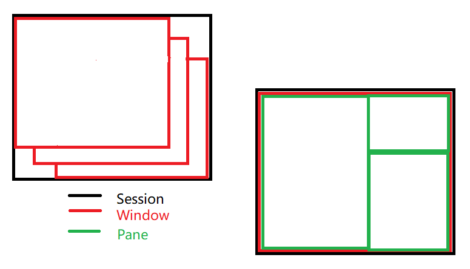

tmux基本使用
写在前面
参考:
tmux: Productive Mouse-Free Development
tmux 概念

命令前缀
默认是ctrl + b
由于程序是在 tmux 环境中运行，因此需要一种方式告诉 tmux 当前所输入的命令是为了让 tmux 去执行而不是 tmux 中的应用程序区执行。
约定:
使用prefix表示命令前缀(command prefix)
tmux 会话(Session)
- 会话创建
新建无名会话
tmux新建名为 session_name 的会话
tmux new -s session_name # 简化命令
tmux new-session -s session_name- 会话分离
让 tmux 在后台运行
prefix b- 会话重连
连接名为 session_name 的会话
tmux attach # 默认连接最新创建的会话
tmux attach -t session_name- 会话终止
exit # 会话中使用，最后一个窗口、面板
tmux kill-session -t session_name- 其它
列出当前存在的 tmux 会话
tmux ls # 简化命令
tmux list-sessionstmux 窗口(Window)
- 窗口创建
prefix c # 新建无名窗口- 窗口命名
prefix ,- 窗口切换
上一个窗口
prefix p # p=previous下一个窗口
prefix n # n=next窗口数小于等于 9 个，数字键快捷切换
prefix 0~9窗口数大于 9 个
prefix f # 通过窗口名称查找窗口
# === 或者 ===
prefix w # 通过可视化窗口列表选择- 窗口关闭
exit # 仅存唯一面板
# === 或者 ===
prefix & # &=et=exittmux 面板(Pane)
- 面板创建
垂直分割
prefix + %水平分割
prefix + "- 面板切换
循环切换
prefix o # 小写o键方向切换
prefix UP/DOWN/LEFT/RIGHT # 上/下/左/右箭头- 面板关闭
exit
# === 或者 ===
prefix X # 大写X键- 面板布局
默认面板布局
even-horizontal: 均匀水平排列(左 -> 右)
even-vertical: 均匀垂直排列(上 -> 下)
main-horizontal: 顶部创建大面板，底部水平放置小面板
main-vertical: 左侧创建大面板，右侧垂直放置小面板
tiled: 所有面板均匀分布
tmux 命令行模式
进入命令行模式
prefix :创建名为 window_name 新窗口
new-window -n window_name创建窗口并执行top命令
new-window -n processes "top"写在后面
tmux, 提升效率。
tmux 有多种方式实现某种功能, 个人认为快捷键是较为理想的选择。
comment:
- Valine
- LiveRe
- ChangYan